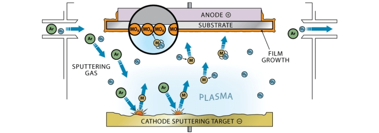

Ref : https://ko.wikipedia.org/wiki/%EC%8A%A4%ED%8D%BC%ED%84%B0%EB%A7%81
https://www.alcatechnology.com/en/blog/magnetron-sputtering/
스퍼터링(Sputtering)은 집적회로 생산라인 공정에서 많이 쓰이는 진공 증착법의 일종으로 비교적 낮은 진공도에서 플라즈마를 이온화된 아르곤 등의 가스를 가속하여 타겟에 충돌시키고, 원자를 분출시켜 웨이퍼나 유리 같은 기판상에 막을 만드는 방법을 뜻한다. 스퍼터링 장비에서는 타겟쪽을 음극(Cathode)로 하고 기판쪽을 양극(Anode)로 한다. 스퍼터링 공정을 진행하는 장비를 스퍼터 혹은 스퍼터링 시스템이라 한다.
Magnetron Sputtering
